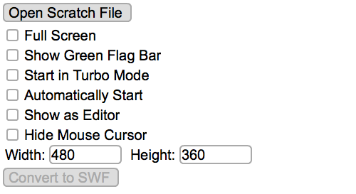

sb2 to swf converter
Quite a few years ago, I wrote a tool to port
Scratch projects to
SWF files and standalone applications. It is now obsolete and unsupported.

download
For any that still want it, here is the latest build and source code.
Converter v3.8 (Scratch v448)
license
Scratch is licensed under the
GPL v2 and is
open source. As a derived work, my code has the same license. I was also asked to include this message:
Scratch is developed by the Lifelong Kindergarten Group at the MIT Media Lab. See http://scratch.mit.edu.
what about the sb3 converter?
Try
HTMLifier. My Scratch 3 converter was buggy and is no longer available.
epilogue
Thank you to all the Scratch users, students, and teachers who made this converter surprisingly popular and sent me numerous kind emails. Keep creating awesome stuff!

 ASentientBot#0323
ASentientBot#0323